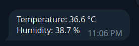
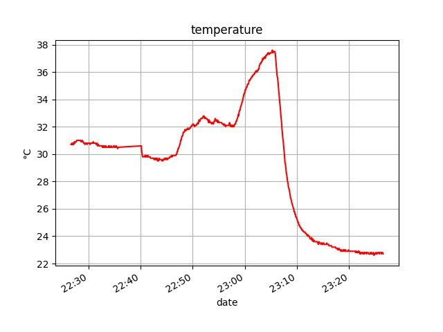
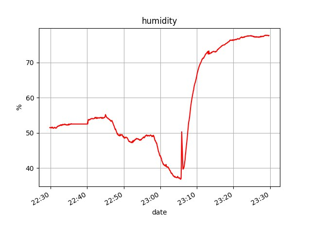

Данный проект состоит из 4 микросервисов:
1 - микроконтроллер с wi-fi модулем и соединенным датчиком температуры и влажности отправляет даннын на сервер по протоколу
MQTP и записываются в очередь через RabbitMQ
2 - приложение на сервере, которое обрабатывает данные с очереди и записывает в базу данных "smart_house"(папка "service")
3 - API сайт подключенный к базе данных "smart_house"
4 - телеграмм бот для взаимодействия с API сайта
Стек технологий:
-для программирования датчика используется C++ на ArduinoIDE
-RabbitMQ для создания очередей
-PostgreSQL база данных
-Django и Django Rest Framework для содания сайта с API
-Aiogram для создания telegram bot
-Остальные python библиотеки: Matplotlib, Pika, asyncio, psycopg2, aiohttp, pydantic и тд.
#include <DHT.h> // для работы с датчиком Dht22
#include <ArduinoJson.h> // для преобразования данных в JSON
#include <NTPClient.h> // для получения текущего времени по протоколу NTP
#include <ESP8266WiFi.h> // необходим для работы микроконтроллера esp8266 и подключения к wi-fi
#include <PubSubClient.h> // для отправки данных на сервер
#include <WiFiUdp.h> // необходим для подключения по протоколу NTP
#define DHTPIN 5
#define DHTTYPE DHT22
DHT dht(DHTPIN, DHTTYPE);
// Update these with values suitable for your network.
const char* ssid = "wifi name";
const char* password = "wifi password";
const char* mqtt_server = "id adress or dns";
const char* mqtt_user = "rabbit username";
const char* mqtt_pass= "rabbit user password";
const int mq2pin = A0; //the MQ2 analog input pin
WiFiClient espClient;
PubSubClient client(espClient);
StaticJsonBuffer<300> JSONbuffer;
JsonObject& JSONencoder = JSONbuffer.createObject();
WiFiUDP ntpUDP;
NTPClient timeClient(ntpUDP, "pool.ntp.org");
void setup_wifi() { // // Подключение к Wi-fi
WiFi.begin(ssid, password);
while (WiFi.status() != WL_CONNECTED) {
delay(500);
Serial.print(".");
}
Serial.println("WiFi connected");
Serial.println("IP address: ");
Serial.println(WiFi.localIP());
}
void reconnect() { // подключенние к RabbitMQ
// Loop until we're reconnected
Serial.println("In reconnect...");
while (!client.connected()) {
Serial.print("Attempting MQTT connection...");
// Attempt to connect
if (client.connect("Arduino_Gas", mqtt_user, mqtt_pass)) {
Serial.println("connected");
} else {
Serial.print("failed, rc=");
Serial.print(client.state());
Serial.println(" try again in 5 seconds");
delay(5000);
}
}
}
void setup() {
pinMode(BUILTIN_LED, OUTPUT);
Serial.begin(115200);
setup_wifi();
client.setServer(mqtt_server, 1883);
dht.begin();
}
void loop() {
timeClient.begin();
timeClient.setTimeOffset(10800);
char msg[8];
if (!client.connected()) {
reconnect();
}
timeClient.update();
float humidity = dht.readHumidity();
// Read temperature as Celsius (the default)
float temperature = dht.readTemperature();
// Read temperature as Fahrenheit (isFahrenheit = true)
float fahrenheit = dht.readTemperature(true);
// Check if any reads failed and exit early (to try again).
if (isnan(humidity) || isnan(temperature) || isnan(fahrenheit)) {
Serial.println("Failed to read from DHT sensor!");
return;
}
// Compute heat index in Celsius (isFahreheit = false)
float hic = dht.computeHeatIndex(temperature, humidity, false);
time_t epochTime = timeClient.getEpochTime();
String formattedTime = timeClient.getFormattedTime();
//Get a time structure
struct tm *ptm = gmtime ((time_t *)&epochTime);
int monthDay = ptm->tm_mday;
int currentMonth = ptm->tm_mon+1;
int currentYear = ptm->tm_year+1900;
//Print complete date:
String currentDate = String(currentYear) + "-" + String(currentMonth) + "-" + String(monthDay) + " " + formattedTime;
JSONencoder["device"] = "esp8632_dht22";
JSONencoder["temperature"] = temperature;
JSONencoder["humidity"] = humidity;
JSONencoder["heatindex"] = hic;
JSONencoder["date_create"] = currentDate;
char JSONmessageBuffer[150];
JSONencoder.printTo(JSONmessageBuffer, sizeof(JSONmessageBuffer));
client.publish("dht22", JSONmessageBuffer);
Serial.println(JSONmessageBuffer);
digitalWrite(BUILTIN_LED, LOW);
delay(500);
digitalWrite(BUILTIN_LED, HIGH); // turn on LED with voltage HIGH
delay(4500);
}
Для получения данных датчика dht22 из API необходимо в GET запросе добавить токен авторизации.
async with aiohttp.ClientSession() as session:
async with session.get(URL_LOGOUT, headers={'Authorization': f'Token {token}'}) as resp:
URl для запросов
-http://127.0.0.1:8000/api/v1/dht22/current/ - получение данных за последние 5 минут
-http://127.0.0.1:8000/api/v1/dht22/hour/ - получение данных за последний час
-http://127.0.0.1:8000/api/v1/dht22/day/ - получение данных за последние сутки
-http://127.0.0.1:8000/api/v1/dht22/week/ - получение данных за последнюю неделю
class CustomPermission(BasePermission):
def has_permission(self, request, view):
try:
user = User.objects.get(username=request.user)
except Exception as ex:
return False
if user.groups.filter(Q(name='family') | Q(name="manager")) or user.is_staff:
return True
return False
def has_object_permission(self, request, view, obj):
return True
Создавать группы и добавлять пользователей в группы могут только пользователи групп "is_staff" и "manager".
Для этих целей переопределен класс BasePermission в приложении "groups":
class IsManagerOrAdmin(BasePermission):
def has_permission(self, request, view):
try:
user = User.objects.get(username=request.user)
except Exception as ex:
return False
if user.groups.filter(name='manager') or user.is_staff == True:
return True
return False
def has_object_permission(self, request, view, obj):
return True
Чтобы начать пользоваться ботом, для начала необходимо зарегестрироваться и(или) войти в аккаунт:
-/sigup для регистрации
-/login для авторизации
-/logout для выхода из аккаунта
Теперь, если у вас есть достаточно прав, то вы можете отслеживать показания с датчика dht22
Для того чтобы узнать текущкю температуру или влажность необходимо отправить команду "/current_th",
и вы получите ответ:

Также вы можете отслеживать изменение температуры или влажности воздуха в виде графика, введя команды
"/statistic_temperature" или "/statistic_humidity" соответсвенно, после этого необходимо выбрать интервал для получения данных:
/for_hour - за последний час
/for_day - за последние сутки
/for_week - -а последнюю неделю

